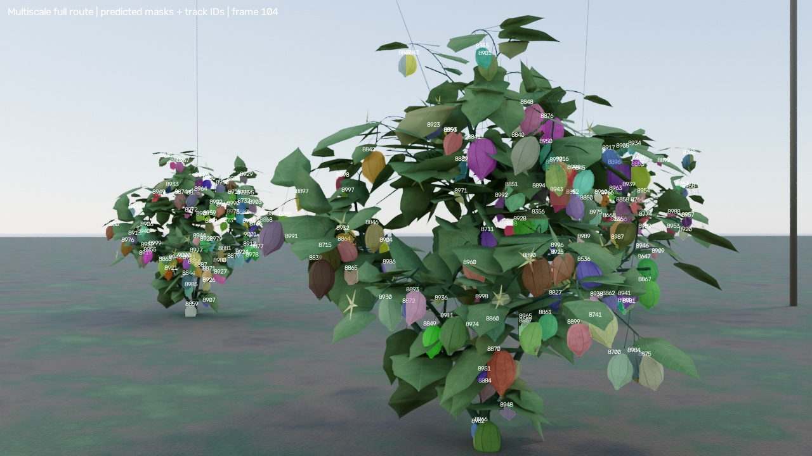
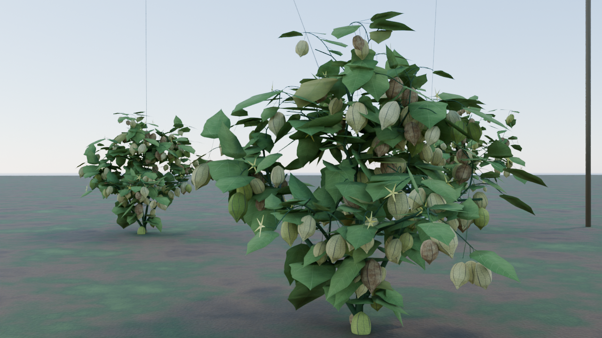
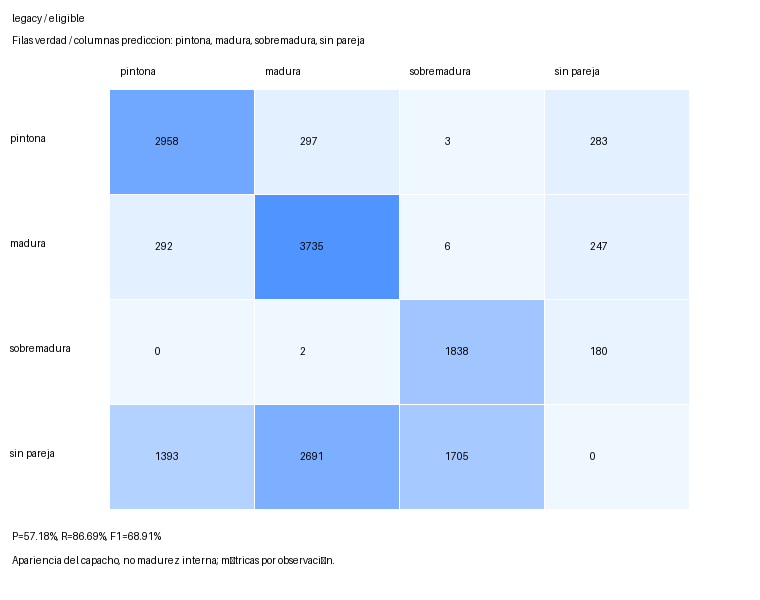
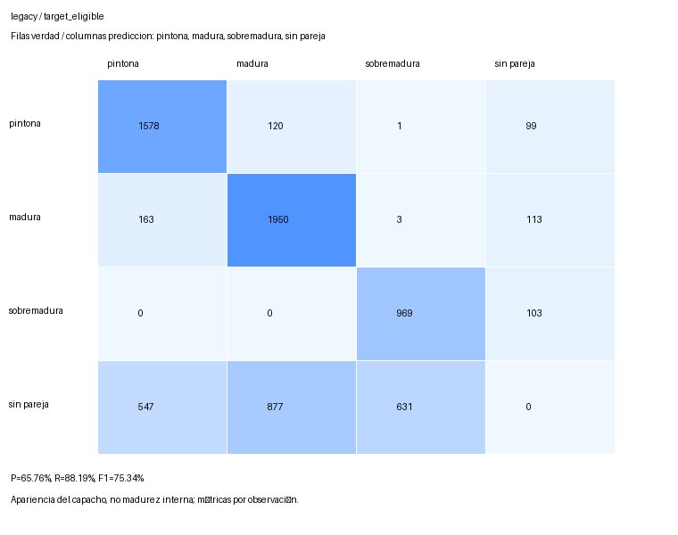
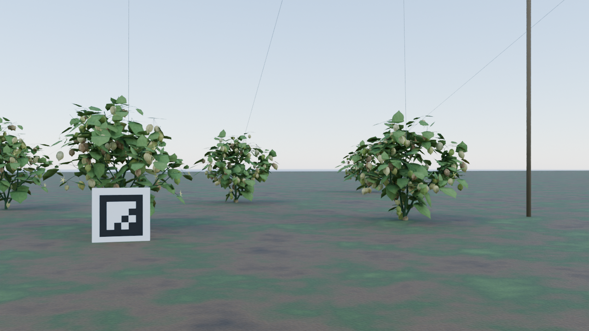
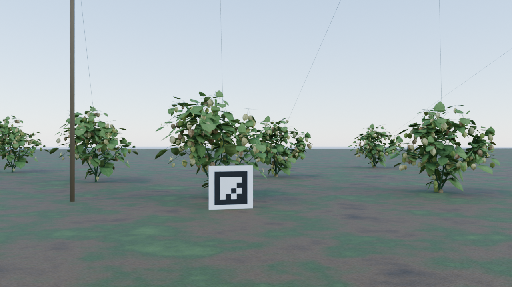

Peor · fotograma 104 · C06 · reverso
F1 objetivo 40,54 %; P 55,56 %, R 31,91 %; TP 15, FP 12, FN 32. 47 capachos visibles del objetivo en el evaluador.

RGB original completo, sin superposición

Resultado parcial · sin comparación entre estrategias
Solo legacy ha terminado en esta entrega. Barrido vertical y órbita, videos finales con recuadro en tercera persona y localización métrica siguen pendientes. Los archivos de las otras rutas y la cola activa no se modificaron. No se cierra la campaña.
Durante la inspección del objetivo activo C06/C07, F1 es 59,24 % (precisión 70,45 %, recuperación 51,10 %). En seguimiento hay 836 cambios de ID entre 1653 pares adyacentes emparejados; estos pares cubren 53,63 % de 3082 pares conjuntamente visibles. Es un diagnóstico de pérdida de identidad; no es IDF1, HOTA ni MOTA.
178 fotogramas a 4 fps: 44,5 s de duración equivalente y 44,25 s entre primera y última captura. ArUco 8 decodificado en 80/178 vistas. La inferencia incluye los vecinos; la identidad de la planta objetivo se usa únicamente dentro del evaluador privado.
La tabla usa únicamente las uchuvas del objetivo activo. Los tiempos incluyen presupuestos distintos; el agregado de toda la ruta no sustituye al resultado de inspección.
| Fase | Vistas | Duración | Precisión | Recuperación | F1 | TP / FP / FN |
|---|---|---|---|---|---|---|
| Inspección | 40 | 10 s | 70,45 % | 51,10 % | 59,24 % | 1829 / 767 / 1750 |
| Tránsito | 131 | 32,75 s | 75,02 % | 51,49 % | 61,06 % | 5144 / 1713 / 4847 |
| Adquisición | 4 | 1 s | 72,62 % | 64,21 % | 68,16 % | 244 / 92 / 136 |
| Retorno al marcador | 3 | 0,75 s | 72,62 % | 64,21 % | 68,16 % | 183 / 69 / 102 |
| Seguimiento del objetivo | Cambios de ID | Pares emparejados / visibles | Cobertura | Cambios condicionados |
|---|---|---|---|---|
| Inspección | 836 | 1653 / 3082 | 53,63 % | 50,57 % |
| Tránsito | 2259 | 4516 / 8931 | 50,57 % | 50,02 % |
| Adquisición | 0 | 192 / 285 | 67,37 % | 0,00 % |
| Retorno al marcador | 42 | 128 / 190 | 67,37 % | 32,81 % |
Los agregados por fase solo comparan fotogramas realmente adyacentes dentro de esa fase. No unen intervalos separados. El tracker no se reinicia al cambiar de fase o de planta; el agregado global sí incluye sus transiciones.
| Ámbito | Precisión | Recuperación | F1 | TP / FP / FN | Instancias en ámbito / total |
|---|---|---|---|---|---|
| Todos, incluidos vecinos | 72,67 % | 43,96 % | 54,78 % | 19820 / 7453 / 25265 | 45085 / 45085 |
| Elegibles, incluidos vecinos | 57,18 % | 86,69 % | 68,91 % | 8531 / 6389 / 1310 | 9841 / 45085 |
| Objetivo activo C06/C07: todos | 73,70 % | 51,98 % | 60,97 % | 7400 / 2641 / 6835 | 14235 / 14235 |
| Objetivo activo C06/C07: elegibles | 65,76 % | 88,19 % | 75,34 % | 4497 / 2342 / 602 | 5099 / 14235 |
Elegible significa área visible de al menos 100 píxeles y lado mínimo de 8 píxeles: es un criterio de ingeniería, no un límite universal de YOLO. Los totales son observaciones por fotograma, no un recuento de frutos únicos.
Filas: clase real de apariencia; columnas: predicción. Fondo/sin pareja incluye omisiones y falsas detecciones. Cada imagen se abre a tamaño original.




También están disponibles las matrices solo de inspección: Todos, incluidos vecinos · Elegibles, incluidos vecinos · Objetivo activo C06/C07: todos · Objetivo activo C06/C07: elegibles.
Selección predeclarada entre los 40 fotogramas de inspección según F1 del objetivo. Desempates por índice menor; mediana inferior. El ranking procede del evaluador privado. Las máscaras e IDs mostrados son las predicciones existentes, incluidos vecinos. Estos ejemplos describen el error observado; no prueban su causa ni garantizan cobertura de todos los fallos.
F1 objetivo 40,54 %; P 55,56 %, R 31,91 %; TP 15, FP 12, FN 32. 47 capachos visibles del objetivo en el evaluador.


F1 objetivo 59,87 %; P 69,12 %, R 52,81 %; TP 47, FP 21, FN 42. 89 capachos visibles del objetivo en el evaluador.


F1 objetivo 69,44 %; P 83,33 %, R 59,52 %; TP 50, FP 10, FN 34. 84 capachos visibles del objetivo en el evaluador.


Estos enlaces preservan las 21 vistas predeclaradas de la ruta, las inspecciones contiguas y las transiciones de adquisición/retorno.
| Frame | Fase / objetivo / lado | Imágenes completas |
|---|---|---|
| 0 | acquisition / C06 / front | Máscaras e IDs · RGB |
| 1 | acquisition / C06 / front | Máscaras e IDs · RGB |
| 3 | acquisition / C06 / front | Máscaras e IDs · RGB |
| 4 | transit / C06 / front | Máscaras e IDs · RGB |
| 10 | inspection_legacy / C06 / front | Máscaras e IDs · RGB |
| 15 | inspection_legacy / C06 / front | Máscaras e IDs · RGB |
| 20 | inspection_legacy / C06 / front | Máscaras e IDs · RGB |
| 21 | inspection_legacy / C07 / front | Máscaras e IDs · RGB |
| 27 | inspection_legacy / C07 / front | Máscaras e IDs · RGB |
| 33 | inspection_legacy / C07 / front | Máscaras e IDs · RGB |
| 88 | transit / C07 / outer | Máscaras e IDs · RGB |
| 97 | inspection_legacy / C07 / back | Máscaras e IDs · RGB |
| 100 | inspection_legacy / C07 / back | Máscaras e IDs · RGB |
| 103 | inspection_legacy / C07 / back | Máscaras e IDs · RGB |
| 104 | inspection_legacy / C06 / back | Máscaras e IDs · RGB |
| 108 | inspection_legacy / C06 / back | Máscaras e IDs · RGB |
| 112 | inspection_legacy / C06 / back | Máscaras e IDs · RGB |
| 174 | transit / C06 / front | Máscaras e IDs · RGB |
| 175 | return_anchor / C06 / front | Máscaras e IDs · RGB |
| 176 | return_anchor / C06 / front | Máscaras e IDs · RGB |
| 177 | return_anchor / C06 / front | Máscaras e IDs · RGB |
La auditoría aritmética independiente informa PASS: 284009 comprobaciones, 1653 archivos verificados y 0 errores. Este informe comprueba sus vínculos con protocolo, resumen y lista RGB; no repite la auditoría ni la inferencia.
Resumen completo legacy · Plan de selección previo a resultados · Selección resuelta y hashes · Recibo de esta entrega · Comprobación de enlaces locales
El constructor no afirma una reproducción de video ni revisión visual propia. Esta entrega contiene imágenes existentes; los videos finales con tercera persona continúan pendientes.